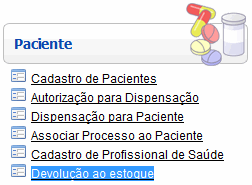
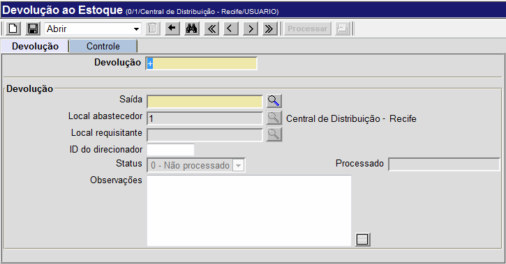
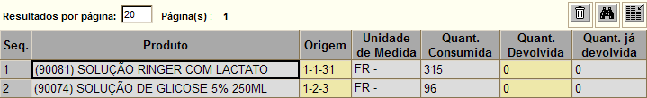

Devolução ao Estoque [ Voltar ]Utilize este formulário para desfazer uma saída para consumo, devolvendo assim o(s) produto(s) ao estoque. O formulário "Devolução ao Estoque" encontra-se dentro do menu "Paciente". 
Ao clicar no nome do formulário, o sistema exibirá a seguinte tela: 
Siga os passos abaixo para realizar uma devolução ao estoque: 1º Passo: selecione a saída que desejar desfazer. Clique no botão [Procurar] ao lado do
campo "N°. da Saída"
para selecioná-la a partir de uma listagem com as saídas registradas no
sistema. [Procurar] ao lado do
campo "N°. da Saída"
para selecioná-la a partir de uma listagem com as saídas registradas no
sistema. Se necessário, deposite no campo "Observações" informações adicionais sobre a devolução em questão. 2° Passo: clique no botão  para salvar a devolução. Uma
vez salva, um novo número de devolução é gerado automaticamente. Além disso, uma grade será exibida na parte inferior
da tela para
conferência dos produtos que devem ser devolvidos ao estoque. para salvar a devolução. Uma
vez salva, um novo número de devolução é gerado automaticamente. Além disso, uma grade será exibida na parte inferior
da tela para
conferência dos produtos que devem ser devolvidos ao estoque.
3° Passo: especifique a quantidade do(s) produto(s) para devolução . No campo "Quant. Devolvida", informe a quantidade para devolução. 4° Passo: clique no botão para
salvar os dados inseridos.5° Passo: após informar todos os dados da devolução, clique no botão  para concluir a mesma. para concluir a mesma. Se desejar, clique no botão para visualizar a tela de impressão da nota de devolução. Para imprimir o relatório, clique no botão  [Imprimir]
do navegador. [Imprimir]
do navegador. |